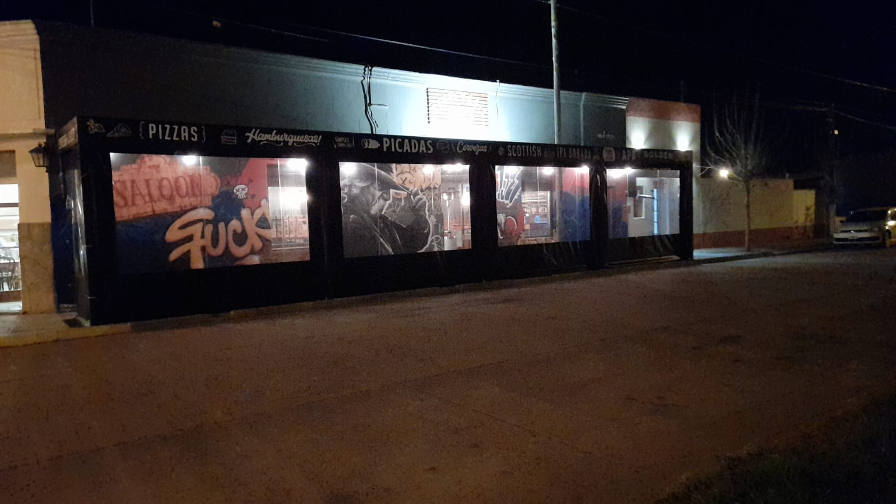
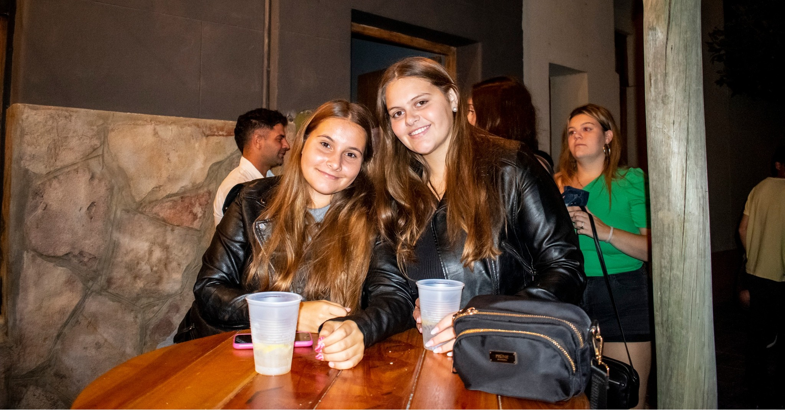

En 1927 Cervecería, nuestro compromiso con la calidad y la atención al público es nuestra bandera. Desde aquellos días iniciales en que abrimos nuestras puertas, nos hemos esforzado por brindar una experiencia única a cada uno de nuestros clientes. Con el sabor auténtico de nuestras cervezas artesanales y el calor de nuestro trato, hacemos que cada visita sea más que una simple parada en el camino. Para nosotros, cada persona que entra es parte de nuestra familia cervecera, y nos enorgullece recibirlos con los brazos abiertos y una sonrisa en el rostro. En 1927, no solo servimos cerveza, ¡sirvenos amigos y momentos inolvidables
En 1927 le damos un valor re groso a esos días piolas en los que las familias se juntan para pasarla bomba. Desde que entran al local, nos mandamos en serio para que cada familia la pase de diez. Con nuestra buena onda y ambiente copado, armamos el ambiente ideal para que los grandes, los chicos y los abuelos la pasen joya juntos. Desde los más chiquitos que se mandan con nuestros platos pensados especialmente para ellos hasta los grandes que se tiran un par de birras artesanales, en 1927, cada integrante de la familia encuentra su onda. Acá, en nuestro bar cervecero, festejamos la unión familiar con pila de buena onda, risas y, obvio, con el gustito inigualable de nuestras cervezas
